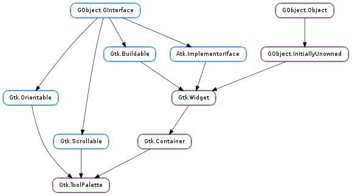

| static | get_drag_target_group() |
| static | get_drag_target_item() |
| static | new() |
| add_drag_dest(widget, flags, targets, actions) | |
| get_drag_item(selection) | |
| get_drop_group(x, y) | |
| get_drop_item(x, y) | |
| get_exclusive(group) | |
| get_expand(group) | |
| get_group_position(group) | |
| get_hadjustment() | |
| get_icon_size() | |
| get_style() | |
| get_vadjustment() | |
| set_drag_source(targets) | |
| set_exclusive(group, exclusive) | |
| set_expand(group, expand) | |
| set_group_position(group, position) | |
| set_icon_size(icon_size) | |
| set_style(style) | |
| unset_icon_size() | |
| unset_style() |
| Name | Type | Flags | Description |
|---|---|---|---|
| icon-size | Gtk.IconSize | r/w | Size of icons in this tool palette |
| icon-size-set | bool | r/w | Whether the icon-size property has been set |
| toolbar-style | Gtk.ToolbarStyle | r/w | Style of items in the tool palette |
None
| Name | Type | Access |
|---|---|---|
| parent_instance | Gtk.Container | r |
Bases: Gtk.Container, Gtk.Orientable, Gtk.Scrollable
A Gtk.ToolPalette allows you to add Gtk.ToolItem s to a palette-like container with different categories and drag and drop support.
A Gtk.ToolPalette is created with a call to Gtk.ToolPalette.new ().
Gtk.ToolItem s cannot be added directly to a Gtk.ToolPalette - instead they are added to a Gtk.ToolItemGroup which can than be added to a Gtk.ToolPalette. To add a Gtk.ToolItemGroup to a Gtk.ToolPalette, use Gtk.Container.add ().
GtkWidget *palette, *group;
GtkToolItem *item;
palette = gtk_tool_palette_new ();
group = gtk_tool_item_group_new (_("Test Category"));
gtk_container_add (GTK_CONTAINER (palette), group);
item = gtk_tool_button_new_new (NULL, _("_Open"));
gtk_tool_button_set_icon_name (GTK_TOOL_BUTTON (item), "document-open");
gtk_tool_item_group_insert (GTK_TOOL_ITEM_GROUP (group), item, -1);
The easiest way to use drag and drop with Gtk.ToolPalette is to call Gtk.ToolPalette.add_drag_dest () with the desired drag source palette and the desired drag target widget. Then Gtk.ToolPalette.get_drag_item () can be used to get the dragged item in the Gtk.Widget ::drag-data-received signal handler of the drag target.
static void
passive_canvas_drag_data_received (GtkWidget *widget,
GdkDragContext *context,
gint x,
gint y,
GtkSelectionData *selection,
guint info,
guint time,
gpointer data)
{
GtkWidget *palette;
GtkWidget *item;
/<!-- -->* Get the dragged item *<!-- -->/
palette = gtk_widget_get_ancestor (gtk_drag_get_source_widget (context),
GTK_TYPE_TOOL_PALETTE);
if (palette != NULL)
item = gtk_tool_palette_get_drag_item (GTK_TOOL_PALETTE (palette),
selection);
/<!-- -->* Do something with item *<!-- -->/
}
GtkWidget *target, palette;
palette = gtk_tool_palette_new ();
target = gtk_drawing_area_new ();
g_signal_connect (G_OBJECT (target), "drag-data-received",
G_CALLBACK (passive_canvas_drag_data_received), NULL);
gtk_tool_palette_add_drag_dest (GTK_TOOL_PALETTE (palette), target,
GTK_DEST_DEFAULT_ALL,
GTK_TOOL_PALETTE_DRAG_ITEMS,
GDK_ACTION_COPY);
| Returns: | the Gtk.TargetEntry for a dragged group |
|---|---|
| Return type: | Gtk.TargetEntry |
Get the target entry for a dragged Gtk.ToolItemGroup.
| Returns: | the Gtk.TargetEntry for a dragged item. |
|---|---|
| Return type: | Gtk.TargetEntry |
Gets the target entry for a dragged Gtk.ToolItem.
| Returns: | a new Gtk.ToolPalette |
|---|---|
| Return type: | Gtk.Widget |
Creates a new tool palette.
| Parameters: |
|
|---|
Sets palette as drag source (see Gtk.ToolPalette.set_drag_source ()) and sets widget as a drag destination for drags from palette. See Gtk.Widget.drag_dest_set ().
| Parameters: | selection (Gtk.SelectionData) – a Gtk.SelectionData |
|---|---|
| Returns: | the dragged item in selection |
| Return type: | Gtk.Widget |
Get the dragged item from the selection. This could be a Gtk.ToolItem or a Gtk.ToolItemGroup.
| Parameters: | |
|---|---|
| Returns: | the Gtk.ToolItemGroup at position or None if there is no such group |
| Return type: |
Gets the group at position (x, y).
| Parameters: | |
|---|---|
| Returns: | the Gtk.ToolItem at position or None if there is no such item |
| Return type: |
Gets the item at position (x, y). See Gtk.ToolPalette.get_drop_group ().
| Parameters: | group (Gtk.ToolItemGroup) – a Gtk.ToolItemGroup which is a child of palette |
|---|---|
| Returns: | True if group is exclusive |
| Return type: | bool |
Gets whether group is exclusive or not. See Gtk.ToolPalette.set_exclusive ().
| Parameters: | group (Gtk.ToolItemGroup) – a Gtk.ToolItemGroup which is a child of palette |
|---|---|
| Returns: | True if group should be given extra space, False otherwise |
| Return type: | bool |
Gets whether group should be given extra space. See Gtk.ToolPalette.set_expand ().
| Parameters: | group (Gtk.ToolItemGroup) – a Gtk.ToolItemGroup |
|---|---|
| Returns: | the index of group or -1 if group is not a child of palette |
| Return type: | int |
Gets the position of group in palette as index. See Gtk.ToolPalette.set_group_position ().
| Returns: | the horizontal adjustment of palette |
|---|---|
| Return type: | Gtk.Adjustment |
Gets the horizontal adjustment of the tool palette.
| Returns: | the Gtk.IconSize of icons in the tool palette |
|---|---|
| Return type: | int |
Gets the size of icons in the tool palette. See Gtk.ToolPalette.set_icon_size ().
| Returns: | the Gtk.ToolbarStyle of items in the tool palette. |
|---|---|
| Return type: | Gtk.ToolbarStyle |
Gets the style (icons, text or both) of items in the tool palette.
| Returns: | the vertical adjustment of palette |
|---|---|
| Return type: | Gtk.Adjustment |
Gets the vertical adjustment of the tool palette.
| Parameters: | targets (Gtk.ToolPaletteDragTargets) – the Gtk.ToolPaletteDragTargets which the widget should support |
|---|
Sets the tool palette as a drag source. Enables all groups and items in the tool palette as drag sources on button 1 and button 3 press with copy and move actions. See Gtk.Widget.drag_source_set ().
| Parameters: |
|
|---|
Sets whether the group should be exclusive or not. If an exclusive group is expanded all other groups are collapsed.
| Parameters: |
|
|---|
Sets whether the group should be given extra space.
| Parameters: |
|
|---|
Sets the position of the group as an index of the tool palette. If position is 0 the group will become the first child, if position is -1 it will become the last child.
| Parameters: | icon_size (int) – the Gtk.IconSize that icons in the tool palette shall have |
|---|
Sets the size of icons in the tool palette.
| Parameters: | style (Gtk.ToolbarStyle) – the Gtk.ToolbarStyle that items in the tool palette shall have |
|---|
Sets the style (text, icons or both) of items in the tool palette.
Unsets the tool palette icon size set with Gtk.ToolPalette.set_icon_size (), so that user preferences will be used to determine the icon size.
Unsets a toolbar style set with Gtk.ToolPalette.set_style (), so that user preferences will be used to determine the toolbar style.